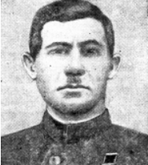
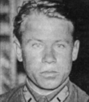
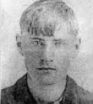

Улицы Ломакина, Ерёмина, Блинова, Сыромятникова, Бочарова… Кажется, что они были всегда. Не ошибёмся, если скажем, что для большинства курян эти знакомые с детства названия — не более чем обычные указательные таблички привычных маршрутов. Но за каждым таким именем — героическая судьба. Давайте вспомним тех, кому мы обязаны жизнью.
Рядовой Алексей Ломакин

Недалеко от центра Курска расположилась улица Ломакина. Рядовой Алексей Ломакин на Курской дуге повторил подвиг Александра Матросова, за что и был посмертно удостоен звания Героя Советского Союза.
Алексею Максимовичу Ломакину шёл сорок четвёртый год, когда он отправился на Великую Отечественную. Родился он в 1897 году в деревне Кожля ныне Курчатовского района. С двенадцати лет помогал отцу добывать хлеб. Земли было мало, хлеба на семью не хватало. Вместе с отцом плотничали по разным городам и сёлам. В Первую мировую остался без родителей. Потом участвовал в боях Гражданской, помогал Советской власти набирать силу. В 1930-м в селе создали колхоз. Первым его председателем избрали Алексея Ломакина.
Алексея Максимовича призвали в армию, когда оккупанты уже вступили в пределы Курской области. Вместе с воинской частью под ударами врага отходил он на восток. А потом с боями шёл на запад, освобождая родную землю от врага.
В мае 1943-го после госпиталя он прибыл на Брянский фронт. Их 215-й гвардейский стрелковый полк 77-й гвардейской стрелковой дивизии 61-й армии занимал позиции восточнее Волхова. За Окой виднелась небольшая деревушка Сивково Болховского района Орловской области. Ранним утром 12 июля заговорили орудия и «катюши» на этом участке фронта. Рядовой Ломакин и его ротные друзья наблюдали из окопов в течение 30 минут, как сотни орудий и миномётов били по переднему краю немцев. А потом в небе появились наши бомбардировщики и штурмовики.
Капитан авиации Владимир Бочаров

Капитан авиации Владимир Бочаров — воин-интернационалист. Он первый из курян получил звание Героя Советского Союза — 31 декабря 1936 года. К сожалению, посмертно. Бочаров был одним из многих советских лётчиков-добровольцев, участвовавших в национально-освободительной войне испанского народа в конце 1930-х годов.
Родился в 1910 году в Курске, в семье железнодорожника. В 17 лет поступил в Вольскую военно— авиационную теоретическую школу, после окончания которой был направлен в Оренбургскую школу лётчиков. Успешно закончив её, он стал лётчиком-истребителем. С 1931 по 1933 год служил в 7-й ИАЭ младшим лётчиком, с 1933 по 1934 год — старшим лётчиком, а затем был флагманским штурманом 106-й ИАЭ. В звании старшего лейтенанта командовал отрядом 40-й ИАЭ 83-й ИАБ Белорусского военного округа. В учебных воздушных боях Бочаров проявлял необыкновенное упорство и волю к победе. Вместе с лучшими лётчиками дважды в год, 1 мая и 7 ноября, его посылали в Москву для участия в воздушном параде над Красной площадью. За отличное освоение новой авиационной техники в 1936 году награждён орденом Красной Звезды.
В том же году Владимир Бочаров добровольно отправился в Испанию. С октября 1936 года был командиром отряда истребителей И-15. Имел псевдоним «Хосе Галарс». В воздушных боях лично и в группе с товарищами уничтожил два вражеских самолёта. 13 ноября был сбит и совершил вынужденную посадку на территории врага. Курянин оказался в плену, его подвергли зверским пыткам и убили. На следующий день, 14 ноября 1936 года, на аэродром Баррахос в Мадриде с самолёта на парашюте сбросили ящик с частями тела героя и запиской с угрозами в адрес остальных советских пилотов. Бочарова похоронили в братской могиле в столице Испании.
На доме в Курске, где жил Бочаров, висит мемориальная доска. В 1987 году в сквере возле школы, в которой он учился, установили бюст героя.
Михаил Сергеевич Фомин

Улица Фомина — ещё одна из тех, что появились сравнительно недавно в микрорайоне Триумфальной арки. Этому герою не суждено было встретить Победу. Он погиб на Курской дуге и похоронен в Поныровском районе.
Михаил Сергеевич Фомин родился в Татарстане. В 1942 году попал на фронт. До Курской дуги он получил орден Отечественной войны 1-й степени за оборону Сталинграда.
В Поныровский район сержант Фомин прибыл как наводчик орудия 2-го дивизиона 159-го гвардейского Красно-знамённого артиллерийского полка 75-й гвардейской стрелковой дивизии 17-го гвардейского стрелкового корпуса 13-й армии Центрального фронта. Вместе с командиром орудия под шквальным огнём противника он уничтожили семь танков, два из которых — «тигры», и одно орудие. Погиб Фомин днём позже: возле орудия взорвался шальной снаряд — командир был ранен, а 19-летний наводчик убит. Звание Героя Советского Союза ему присудили уже посмертно.
В своих воспоминаниях командир 159-го гвардейского Краснознамённого артполка Левкин Н. А. написал: «Все ожидали появления новых немецких танков — «тигров», и поэтому особое внимание было обращено на противотанковую оборону, 2-я батарея была поставлена на прямую наводку против танков в 1 км южнее ст. Поныри. Началось большое наступление фашистов. Преодолев первую полосу нашей обороны, танки противника вышли к артиллерийским позициям. Их средние танки были в 800-1000 метрах от батареи. Командир орудия Малафеев, наводчик Фомин открывают огонь и подбивают подряд пять танков. На западной окраине ст. Поныри появляются «тигры». Переносным огнём подбиты ещё два танка. Немцы открывают по нашим огонь из орудия. Малафеев одним выстрелом уничтожает его. Это была отменная работа всего двух человек под огнём противника. Стрелковое подразделение, находившееся рядом в траншее, восхищалось их подвигом. Немецкие танки не прошли. На следующий день батарея была поставлена на безопасную позицию. Шальной немецкий снаряд разорвался у орудия, и командир Малафеев был тяжело ранен, наводчик Фомин убит».